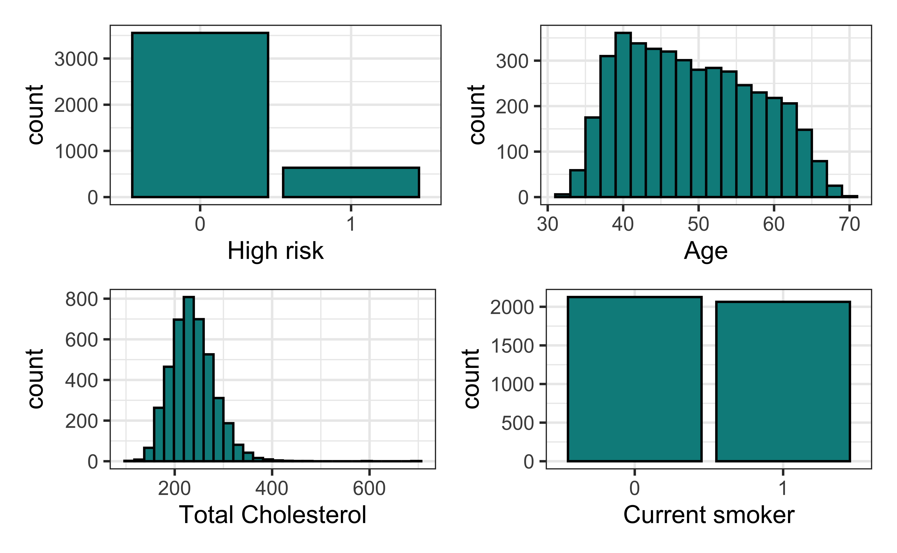
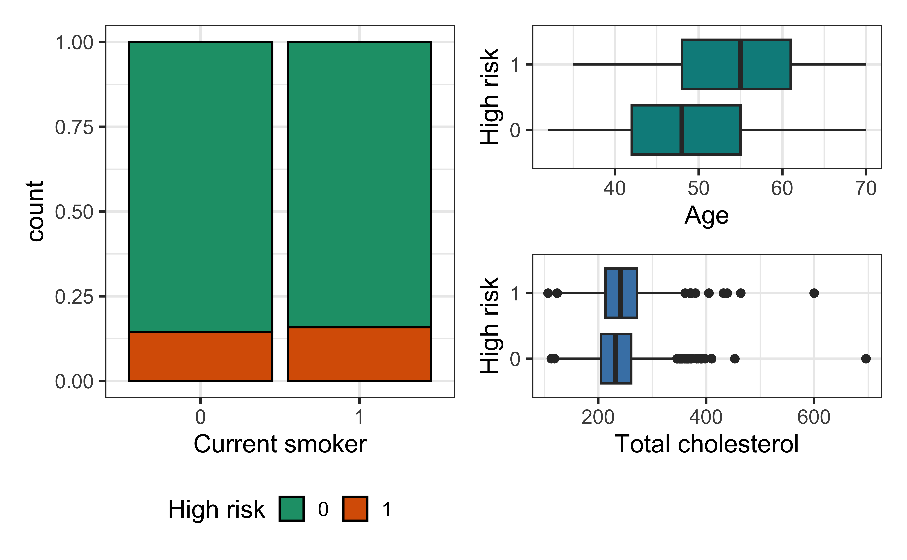
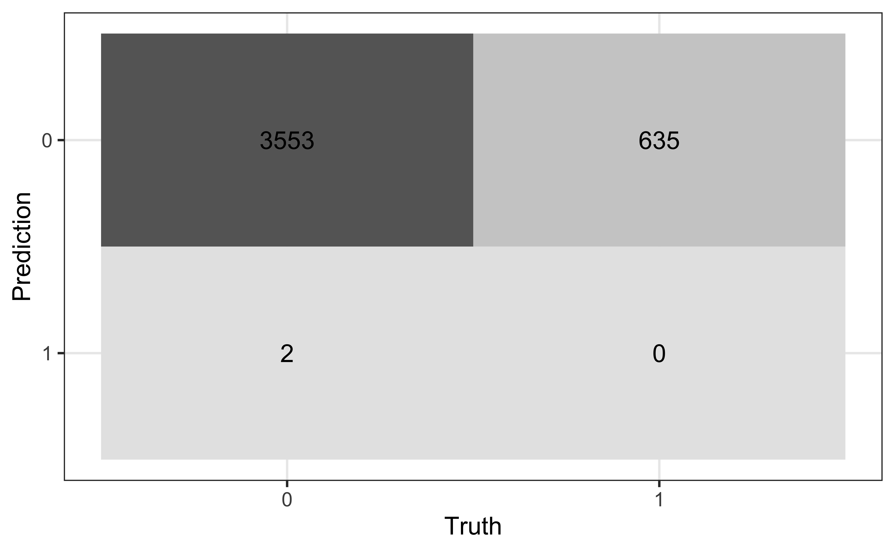
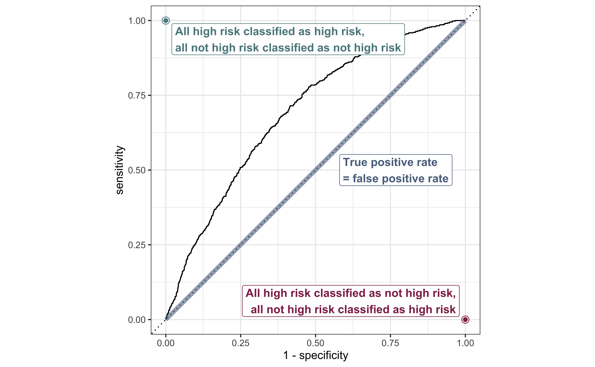
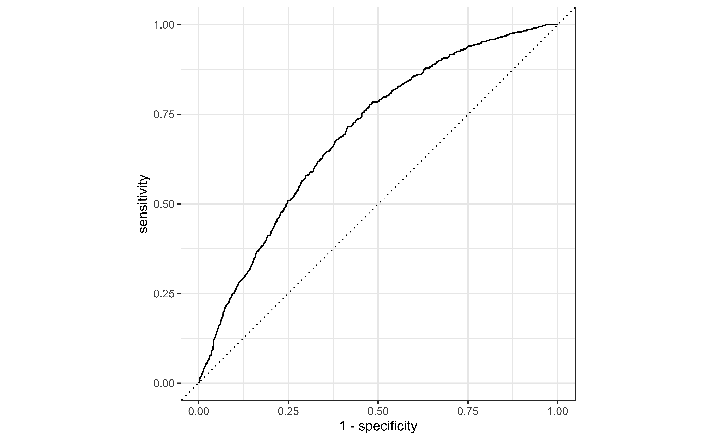

# load packages
library(tidyverse)
library(tidymodels)
library(openintro)
library(knitr)
library(kableExtra) # for table embellishments
library(patchwork)
# set default theme and larger font size for ggplot2
ggplot2::theme_set(ggplot2::theme_bw(base_size = 16))Logistic regression
Inference
Announcements
Project EDA due TODAY at 11:59pm (on GitHub)
HW 04 due March 31 at 11:59pm
- Released after class
Statistics experience due April 15
SSMU Data Mini #3 - April 4
- See Ed Discussion for full announcement
Topics
Model assessment using ROC curve and AUC
Estimating coefficients for logistic regression model
Inference for a single model coefficient
Computational setup
Data: Risk of coronary heart disease
This data set is from an ongoing cardiovascular study on residents of the town of Framingham, Massachusetts.
high_risk: 1 = High risk of having heart disease in next 10 years, 0 = Not high risk of having heart disease in next 10 yearsage: Age at exam time (in years)totChol: Total cholesterol (in mg/dL)currentSmoker: 0 = nonsmoker; 1 = smoker
The goal is to use logistic regression to identify patients who are high risk of heart disease.
Univariate EDA

Bivariate EDA

Risk of coronary heart disease
heart_disease_fit <- glm(high_risk ~ age + totChol + currentSmoker,
data = heart_disease, family = "binomial")| term | estimate | std.error | statistic | p.value |
|---|---|---|---|---|
| (Intercept) | -6.638 | 0.372 | -17.860 | 0.000 |
| age | 0.082 | 0.006 | 14.430 | 0.000 |
| totChol | 0.002 | 0.001 | 2.001 | 0.045 |
| currentSmoker1 | 0.457 | 0.092 | 4.951 | 0.000 |
ROC curve and AUC
Prediction and classification
We are often interested in using the model to classify observations, i.e., predict whether a given observation will have a 1 or 0 response
For each observation
- Use the logistic regression model to calculate the predicted log-odds the response for the \(i^{th}\) observation is 1
- Use the log-odds to calculate the predicted probability the \(i^{th}\) observation is 1
- Then, use the predicted probability to classify the observation as having a 1 or 0 response using some predefined threshold
Confusion matrix
A confusion matrix is a \(2 \times 2\) table that compares the predicted and actual classes for a given threshold. We can produce this matrix using the conf_mat() function in the yardstick package (part of tidymodels).

True/false positive/negative
| Not high risk \((y_i = 0)\) | High risk \((y_i = 1)\) | |
|---|---|---|
| Classified not high risk \((\hat{\pi}_i \leq \text{threshold})\) | True negative (TN) | False negative (FN) |
| Classified high risk \((\hat{\pi}_i > \text{threshold})\) | False positive (FP) | True positive (TP) |
Sensitivity and specificity
How do we set the threshold if the primary goal is high sensitivity?
How do we set the threshold if the primary goal is high specificity?
ROC Curve
So far the model assessment has depended on the model and selected threshold. The receiver operating characteristic (ROC) curve allows us to assess the model performance across a range of thresholds.
. . .

x-axis: 1 - Specificity (False positive rate)
y-axis: Sensitivity (True positive rate)
Which corner of the plot indicates the best model performance?
ROC curve

ROC curve in R
# calculate sensitivity and specificity at each threshold
roc_curve_data <- heart_disease_aug |>
roc_curve(high_risk, .fitted,
event_level = "second")
# plot roc curve
autoplot(roc_curve_data)ROC curve in R
Randomly selected observations from roc_data
# A tibble: 20 × 3
.threshold specificity sensitivity
<dbl> <dbl> <dbl>
1 0.0778 0.268 0.929
2 0.119 0.505 0.784
3 0.0990 0.406 0.852
4 0.0664 0.185 0.959
5 0.354 0.974 0.0614
6 0.102 0.422 0.839
7 0.144 0.610 0.682
8 0.225 0.815 0.394
9 0.135 0.577 0.715
10 0.0826 0.302 0.910
11 0.283 0.922 0.217
12 0.136 0.581 0.715
13 0.0659 0.181 0.959
14 0.298 0.938 0.175
15 0.0554 0.110 0.980
16 0.161 0.670 0.614
17 0.136 0.584 0.715
18 0.0511 0.0861 0.983
19 0.111 0.466 0.808
20 0.0612 0.145 0.969 
Area under the curve
The area under the curve (AUC) can be used to assess how well the logistic model fits the data
AUC=0.5: model is a very bad fit (no better than a coin flip)
AUC close to 1: model is a good fit
. . .
heart_disease_aug |>
roc_auc(high_risk, .fitted,
event_level = "second"
)# A tibble: 1 × 3
.metric .estimator .estimate
<chr> <chr> <dbl>
1 roc_auc binary 0.696Estimating coefficients
Statistical model
The form of the statistical model for logistic regression is
\[ \log\Big(\frac{\pi_i}{1-\pi_i}\Big) = \beta_0 + \beta_1x_{i1} + \beta_2x_{i2} + \dots + \beta_px_{ip} \]
where \(\pi_i\) is the probability \(y_i = 1\).
Distribution of \(Y\)
The response variable \(Y\) follows a Bernoulli distribution, \(\text{Bernoulli}(\pi)\) (similarly we can think of \(n\) observed \(Y\)’s as generated from a Binomial distribution, \(\text{Binomial}(n,\pi)\))
. . .
For an individual observation,
\[ p(y_i | x_{i1}, \ldots, x_{ip}, \beta_0, \beta_1, \ldots, \beta_p) = \pi_i^{y_i}(1 - \pi_i)^{1- y_i} \]
Likelihood function
The likelihood function is the joint density of \(y_1, \ldots, y_n\) for unknown coefficients \(\beta_0, \ldots, \beta_p\)
\[ \begin{aligned} L &= \prod_{i=1}^{n} p(y_i | x_{i1}, \ldots, x_{ip}, \beta_0, \beta_1, \ldots, \beta_p) \\[8pt] & = \prod_{i=1}^{n} \pi_i^{y_i}(1 - \pi_i)^{1- y_i} \end{aligned} \]
. . .
The estimated coefficients are the combination of \(\hat{\beta}_0, \hat{\beta}_1, \ldots, \hat{\beta}_p\) that maximize the likelihood \(L\). They are the maximum likelihood estimates.
Estimating coefficients
We use the log-likelihood function to find the maximum likelihood estimates
\[ \log L = \sum\limits_{i=1}^n[y_i \log(\hat{\pi}_i) + (1 - y_i)\log(1 - \hat{\pi}_i)] \]
where
\(\hat{\pi}_i = \frac{\exp\{\hat{\beta}_0 + \hat{\beta}_1x_{i1} + \dots + \hat{\beta}_px_{ip}\}}{1 + \exp\{\hat{\beta}_0 + \hat{\beta}_1x_{i1} + \dots + \hat{\beta}_px_{ip}\}}\)
Iterative model fitting in R
high_risk_fit_full <- glm(high_risk ~ age + currentSmoker,
data = heart_disease, family = "binomial",
# print each iteration
control = glm.control(trace = TRUE))Tracing glm.fit(x = structure(c(1, 1, 1, 1, 1, 1, 1, 1, 1, 1, 1, 1, 1, .... on entry
Deviance = 3357.807 Iterations - 1
NULL
Deviance = 3316.428 Iterations - 2
[1] -4.31596973 0.05034933 0.25571505
Deviance = 3315.711 Iterations - 3
[1] -6.03166535 0.08008619 0.42967123
Deviance = 3315.711 Iterations - 4
[1] -6.24973646 0.08351662 0.45215241
Deviance = 3315.711 Iterations - 5
[1] -6.25510967 0.08360203 0.45269557#stop printing for future models
untrace(glm.fit)Inference for coefficients
Inference for coefficients
There are two approaches for testing coefficients in logistic regression
(Wald) hypothesis test: Use to test
- a single coefficient (when \(n\) is large)
Drop-in-deviance test: Use to test…
- a single coefficient
- a categorical predictor with 3+ levels
- a group of predictor variables
Hypothesis test for \(\beta_j\)
Hypotheses: \(H_0: \beta_j = 0 \hspace{2mm} \text{ vs } \hspace{2mm} H_a: \beta_j \neq 0\), given the other variables in the model
. . .
(Wald) Test Statistic: \[z = \frac{\hat{\beta}_j - 0}{SE(\hat{\beta}_j)}\]
. . .
P-value: \(P(|Z| > |z|)\), where \(Z \sim N(0, 1)\), the Standard Normal distribution
Coefficient for age
Code
high_risk_fit <- glm(high_risk ~ age + currentSmoker,
data = heart_disease, family = "binomial",
control = glm.control(trace = FALSE))
tidy(high_risk_fit, conf.int = TRUE) |>
kable(digits = 5) |>
row_spec(2, background = "#D9E3E4")| term | estimate | std.error | statistic | p.value | conf.low | conf.high |
|---|---|---|---|---|---|---|
| (Intercept) | -6.25511 | 0.31504 | -19.85519 | 0 | -6.88001 | -5.64472 |
| age | 0.08360 | 0.00556 | 15.04622 | 0 | 0.07279 | 0.09458 |
| currentSmoker1 | 0.45270 | 0.09227 | 4.90642 | 0 | 0.27230 | 0.63410 |
. . .
Hypotheses:
\[ H_0: \beta_{age} = 0 \hspace{2mm} \text{ vs } \hspace{2mm} H_a: \beta_{age} \neq 0 \], given current smoking status is in the model
Coefficient for age
| term | estimate | std.error | statistic | p.value | conf.low | conf.high |
|---|---|---|---|---|---|---|
| (Intercept) | -6.25511 | 0.31504 | -19.85519 | 0 | -6.88001 | -5.64472 |
| age | 0.08360 | 0.00556 | 15.04622 | 0 | 0.07279 | 0.09458 |
| currentSmoker1 | 0.45270 | 0.09227 | 4.90642 | 0 | 0.27230 | 0.63410 |
Test statistic:
\[z = \frac{0.08360 - 0}{0.00556} = 15.04 \]
Coefficient for age
| term | estimate | std.error | statistic | p.value | conf.low | conf.high |
|---|---|---|---|---|---|---|
| (Intercept) | -6.25511 | 0.31504 | -19.85519 | 0 | -6.88001 | -5.64472 |
| age | 0.08360 | 0.00556 | 15.04622 | 0 | 0.07279 | 0.09458 |
| currentSmoker1 | 0.45270 | 0.09227 | 4.90642 | 0 | 0.27230 | 0.63410 |
P-value:
\[ P(|Z| > |15.04|) \approx 0 \]
. . .
2 * pnorm(15.04,lower.tail = FALSE)[1] 4.015501e-51Coefficient for age
| term | estimate | std.error | statistic | p.value | conf.low | conf.high |
|---|---|---|---|---|---|---|
| (Intercept) | -6.25511 | 0.31504 | -19.85519 | 0 | -6.88001 | -5.64472 |
| age | 0.08360 | 0.00556 | 15.04622 | 0 | 0.07279 | 0.09458 |
| currentSmoker1 | 0.45270 | 0.09227 | 4.90642 | 0 | 0.27230 | 0.63410 |
Conclusion:
The p-value is very small, so we reject \(H_0\). The data provide sufficient evidence that age is a statistically significant predictor of whether someone is high risk of having heart disease, after accounting for smoking status.
Confidence interval for \(\beta_j\)
We compute the C% confidence interval for \(\beta_j\) as the following:
\[ \hat{\beta}_j \pm z^* \times SE_{\hat{\beta}_j} \]
where \(z^*\) is the critical value from the \(N(0,1)\) distribution
# z* for 95% confidence interval
qnorm(0.975, mean = 0, sd = 1) [1] 1.959964. . .
Note
This is an interval for the change in the log-odds for every one unit increase in \(x_j\)
Interpretation in terms of the odds
The change in odds for every one unit increase in \(x_j\).
\[ \exp\{\hat{\beta}_j \pm z^* \times SE_{\hat{\beta}_j}\} \]
. . .
Interpretation: We are \(C\%\) confident that for every one unit increase in \(x_j\), the odds multiply by a factor of \(\exp\{\hat{\beta}_j - z^*\times SE_{\hat{\beta}_j}\}\) to \(\exp\{\hat{\beta}_j + z^* \times SE_{\hat{\beta}_j}\}\), holding all else constant.
CI for age
| term | estimate | std.error | statistic | p.value | conf.low | conf.high |
|---|---|---|---|---|---|---|
| (Intercept) | -6.255 | 0.315 | -19.855 | 0 | -6.880 | -5.645 |
| age | 0.084 | 0.006 | 15.046 | 0 | 0.073 | 0.095 |
| currentSmoker1 | 0.453 | 0.092 | 4.906 | 0 | 0.272 | 0.634 |
Interpret the 95% confidence interval for age in terms of the odds of being high risk for heart disease.
Recap
Model assessment using ROC curve and AUC
Estimating coefficients for logistic regression model
Inference for a single model coefficient
Next class
Model selection for logistic regression
Complete Lecture 19 prepare